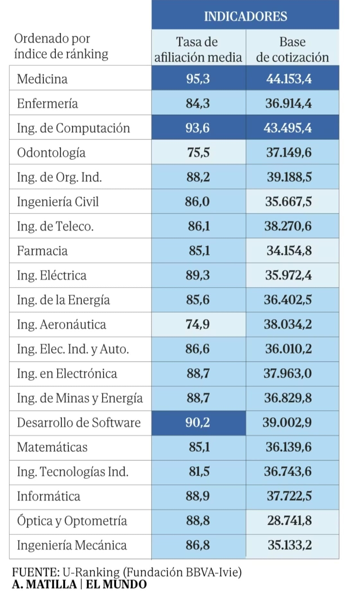

Más allá de estudiar lo que dé dinero o lo que te haga feliz, recomiendo estudiar en lo que uno sea bueno.
Trabajar es crear un servicio o producto para servir al prójimo a cambio de un sueldo. Si eres bueno, lo harás bien y además cobrarás bien. Se suma a que es raro que se nos dé bien algo que odiamos.
Si eres bueno, tendrás demanda. No hace falta que elijas las carreras más pagadas. Si eres un profesional de calidad cobrarás muy bien. Sin embargo, si estudias informática o una ingeniería (con muchas salidas y buenos sueldos) pero eres un mediocre no irás a ningún lado.
Jamás recomendaría a nadie que estudie lo “que le haga feliz o le diga la inspiración”. Estudia lo que tiene demanda (que por supuesto puede hacerte feliz), que te va a dar trabajo y dinero para hacer lo que realmente te hace feliz; estar con quien quieres y disfrutar de tus pasatiempos.
Aquí te adjunto esta imagen con los últimos datos de empleabilidad (tasas de afiliación) y lo que sería el salario para que nos hagamos una idea

Puedes estudiar lo que te haga feliz, serás feliz en la universidad pero muy infeliz cuando estés en el paro dos años y te tengas que poner a trabajar de algo que no te gusta y encima mal pagado. Hay gente que evita la realidad, no sé por qué, y por ejemplo se dedican a estudiar magisterio. “Pero se necesitan profesores”, “tú no eres nadie para decirme qué estudiar” o cosas similares nos dirán.
Sólo hay que investigar por internet para comprobarlo. Se gradúan tres veces más de lo que el sistema escolar necesita, quejas las que quieras, pero es la realidad. Ten casi seguro que te vas a graduar de magisterio (podemos poner muchas carreras aquí) y no vas a encontrar trabajo o va a ser precario.
Al final del cuento, después de ocho horas vas a estar quemado de cualquier trabajo (siento ser pestiño). La felicidad la vas a encontrar fuera y al final esto es una balanza. Encontrar trabajo en el que eres bueno, cobras bien y te permite gastar dinero en tus cosas frente a estudiar lo que te gusta para no tener recursos con los que mantenerte.
← Volver a artículos